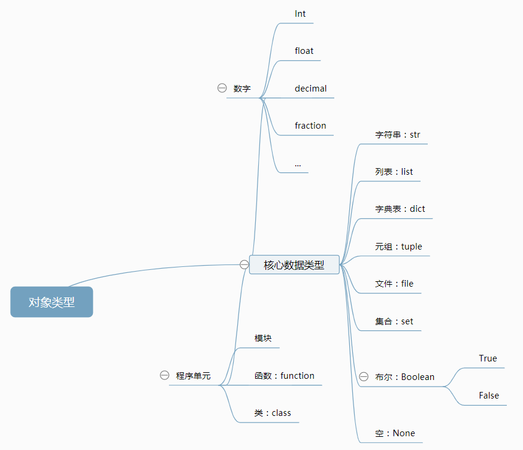

课时一、python运行方式
1、windows命令提示符打开python的方法：首先windows+r输入cmd打开命令提示符，在cmd输入python或者py
2、脚本方式：步骤1：编写脚本代码，保存为 *.py
步骤2：命令提示符 python *.py
课时二、Python变量、数据类型及存储
1、概念层级：程序、模块、语句、表达式：创建、处理对象
2、变量：第一次赋值时生成
2.1 命名规则：a.包含字母、数字、下划线，且只能以字母或下划线开头
b.不能有空格
c.避免python关键字或函数名
d.简短且有描述性
2.2 python里的变量并没有事先规定类型，而是由对象指定，且随对象不同而变动。--可以用type()函数来查看变量数据类型
课时三、Python常用数据类型概览
1、垃圾回收： Python自动释放未被引用的对象
内部原理依据对象引用计数器统计的数值
2、共享引用：多个变量引用一个对象（通过id()查看变量的数值表示来判断引用的对象是否一样）
2.1 判断字面值是否相等： ==
2.2 判断地址是否相同： is
2.3 256以下整数，已被python缓存
3、数据类型
